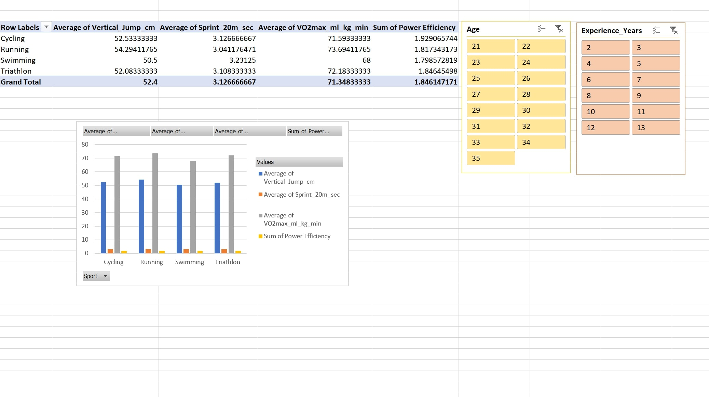

Excel is a spreadsheet software developed by Microsoft that allows users to organize, analyze, and visualize data using tables, formulas, and charts. It’s widely used for tasks like budgeting, data tracking, and statistical analysis. With its powerful tools and functions, Excel helps users manage large amounts of data efficiently and make data-driven decisions.

What features did I use?
Using kinesiology collected data, I made a PivotTale that analyzed performance metrics such as the average of cyclists, runners, swimmers, and triathlon athelete's vertical jump, 20m sprint, as well as their VO2max. I made a custom calculated field for efficiency and risk and slicers that is able to be filtered by age and experience level. I also included a visual chart linked to the PivotTable. With the spreadsheet, I implemented conditional formatting based on the injury risk formula as well as creating a custom formula for sleep quality. Click on the image to the left to view this Excel sheet or click this link!